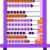
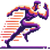

Linguística
Nota: Essas são ideias pra começar — use sua criatividade pra inventar outras formas de expressão!
- Poema Visual:
1. Escreva um poema curto (4-6 linhas) no bloco de notas.
2. Abra o Canva, escolha "Criar um design" > "Post para Instagram".
3. Adicione o texto, use uma fonte artística (ex.: "Pixelify Sans").
4. Insira um fundo colorido ou imagem abstrata.
5. Exporte como PNG.
- Conto Ilustrado:
1. Escreva um conto curto (3-5 frases) no celular ou PC.
2. Faça desenhos simples no Paint pra cada frase.
3. Tire foto dos desenhos ou salve como PNG.
4. Junte texto e imagens no Canva num layout de página.
5. Exporte como PNG ou PDF.
- HQ Narrativa:
1. Escreva um diálogo curto (4 quadros) no bloco de notas.
2. Desenhe os quadros no papel ou Paint com personagens simples.
3. Escaneie ou tire foto dos desenhos.
4. Monte no Canva com balões de fala.
5. Exporte como PNG.
- Spoken Word:
1. Escreva um poema de 30 segundos.
2. Grave sua voz lendo no celular (app Gravador).
3. Adicione um fundo musical leve (use InShot ou Audacity).
4. Exporte como MP3.
5. Teste o áudio como NFT.
 Lógico-Matemática
Nota: Essas são apenas ideias iniciais — explore além com métodos, enigmas ou até jogos visuais!
- Arte Geométrica:
1. Abra o Paint ou Canva.
2. Desenhe formas (círculos, triângulos) em padrão simétrico.
3. Use cores vibrantes pra preencher.
4. Adicione detalhes (linhas, pontos) pra criar profundidade.
5. Salve como PNG.
- Puzzle Interativo:
1. Desenhe uma imagem simples no Paint (ex.: um rosto).
2. Corte em 4-6 partes com a ferramenta de seleção.
3. Salve cada parte como PNG separado.
4. Junte as partes num arquivo ZIP ou PDF.
5. Teste como um NFT interativo.
- Infográfico Animado:
1. Crie um gráfico simples no Canva (ex.: barras coloridas).
2. Adicione texto explicativo (ex.: "Meu dia").
3. Use a ferramenta de animação do Canva (ex.: "Fade").
4. Exporte como MP4.
5. Teste como NFT animado.
- Escultura Lógica:
1. Monte uma estrutura 3D com formas encaixadas (ex.: cubos de papel).
2. Fotografe em ângulos diferentes.
3. Escolha a melhor foto e edite no celular.
4. Salve como PNG.
5. Teste como NFT.
Espacial
Nota: Essas são ideias pra começar — imagine cenários ou objetos únicos pra ir além!
- Ilustração Fantástica:
1. Pense num cenário imaginário (ex.: planeta alienígena).
2. Desenhe no Paint ou papel com detalhes (cores, sombras).
3. Escaneie ou tire foto do desenho.
4. Ajuste brilho/contraste no celular.
5. Salve como PNG.
- Miniatura 3D:
1. Modele um objeto surreal com argila ou massa (ex.: nave).
2. Pinte com cores chamativas (tinta ou caneta).
3. Fotografe contra um fundo neutro.
4. Edite no celular pra destacar (ex.: app Snapseed).
5. Salve como PNG.
- Mapa Artístico:
1. Abra o Canva ou desenhe um mapa fictício no papel.
2. Adicione elementos (montanhas, rios) com cores vivas.
3. Use texto pra nomear lugares criativos.
4. Exporte como PNG ou fotografe.
5. Teste como NFT.
- Colagem Visionária:
1. Tire 3-5 fotos no celular (ex.: céu, objetos).
2. Abra o Canva, crie um "Post para Instagram".
3. Combine as fotos com desenhos ou filtros.
4. Adicione um toque futurista (ex.: linhas neon).
5. Exporte como PNG.
 Corporal-Cinestésica
Nota: Essas são apenas sugestões — crie com o corpo ou mãos de formas que só você imagina!
- Dança Digital:
1. Crie uma coreografia curta (30 segundos).
2. Filme com o celular em um lugar simples.
3. Edite no InShot com efeitos (ex.: slow motion).
4. Exporte como MP4.
5. Teste como NFT animado.
- Escultura Viva:
1. Modele uma forma com argila ou massa (ex.: figura humana).
2. Adicione detalhes com ferramentas simples (ex.: palito).
3. Fotografe em ângulos dinâmicos com boa luz.
4. Escolha a melhor foto.
5. Salve como PNG.
- Performance em Stop-Motion:
1. Planeje um movimento (ex.: mão abrindo).
2. Tire 10-15 fotos em sequência com o celular.
3. Junte as fotos num vídeo (app Stop Motion Studio).
4. Exporte como MP4.
5. Teste como NFT.
- Arte Tátil:
1. Pegue materiais reciclados (papelão, tecido).
2. Crie um relevo colando camadas (ex.: formas abstratas).
3. Fotografe com sombra pra destacar textura.
4. Edite no celular pra realçar.
5. Salve como PNG.
Musical
Nota: Essas são ideias iniciais — misture sons ou crie melodias que ninguém nunca ouviu!
- Batida Original:
1. Grave sons do dia a dia (ex.: batidas na mesa) com o celular.
2. Abra o Audacity, importe os sons.
3. Crie um loop rítmico cortando e repetindo.
4. Exporte como MP3.
5. Teste como NFT sonoro.
- Melodia Visual:
1. Crie uma melodia curta no celular (app GarageBand).
2. Abra o Canva, faça um vídeo com formas coloridas.
3. Sincronize o áudio com animações (ex.: "Pulse").
4. Exporte como MP4.
5. Teste como NFT.
- Poesia Sonora:
1. Escreva um poema curto e grave sua voz (celular).
2. Adicione sons ambientes (ex.: vento) no Audacity.
3. Misture as camadas pra criar um efeito único.
4. Exporte como MP3.
5. Teste como NFT.
- Paisagem Acústica:
1. Grave sons da natureza ou cidade (celular).
2. Abra o Audacity, corte e junte os melhores trechos.
3. Adicione fade in/out pra um toque artístico.
4. Exporte como MP3.
5. Teste como NFT sonoro.
Interpessoal
Nota: Essas são sugestões — junte amigos pra criar algo único que reflita vocês!
- Mural Coletivo:
1. Reúna amigos e peça um desenho ou foto de cada.
2. Abra o Canva, crie um "Poster".
3. Junte todas as artes num layout harmonioso.
4. Exporte como PNG.
5. Teste como NFT colaborativo.
- Narrativa em Camadas:
1. Crie uma história com amigos (cada um fala uma parte).
2. Grave as vozes no celular separadamente.
3. Junte os áudios no Audacity com transições.
4. Exporte como MP3.
5. Teste como NFT sonoro.
- Galeria de Retratos:
1. Fotografe ou desenhe rostos de amigos (celular ou Paint).
2. Abra o Canva, crie um "Collage de Fotos".
3. Adicione cada retrato com bordas criativas.
4. Exporte como PNG.
5. Teste como NFT.
- Teatro Digital:
1. Escreva uma cena curta com amigos (2-3 falas).
2. Filme a atuação com o celular.
3. Edite no InShot com texto ou efeitos.
4. Exporte como MP4.
5. Teste como NFT animado.
Intrapessoal
Nota: Essas são ideias pra começar — expresse quem você é de jeitos novos e pessoais!
- Autorretrato Emocional:
1. Escolha um sentimento (ex.: alegria) e desenhe no Paint.
2. Use cores que reflitam essa emoção.
3. Adicione detalhes pessoais (ex.: um símbolo seu).
4. Salve como PNG.
5. Teste como NFT.
- Diário em Camadas:
1. Escreva um pensamento no bloco de notas.
2. Abra o Canva, crie um "Post para Instagram".
3. Adicione o texto e fotos ou desenhos seus.
4. Exporte como PNG.
5. Teste como NFT.
- Mandala Digital:
1. Desenhe uma mandala no papel ou Canva.
2. Use cores que representem você.
3. Escaneie ou exporte como PNG.
4. Ajuste contraste no celular se precisar.
5. Teste como NFT.
- Reflexão Animada:
1. Escreva uma frase sobre sua vida.
2. Grave sua voz ou digite no Canva.
3. Crie um vídeo com texto animado (ex.: "Fade").
4. Exporte como MP4.
5. Teste como NFT animado.
Naturalista
Nota: Essas são sugestões — use a natureza pra contar histórias ou criar do seu jeito!
- Paisagem Viva:
1. Fotografe uma cena natural (ex.: árvore).
2. Edite no Paint ou celular com um filtro surreal.
3. Adicione um desenho (ex.: criatura) na foto.
4. Salve como PNG.
5. Teste como NFT.
- Escultura Orgânica:
1. Junte folhas, pedras ou galhos numa forma.
2. Arrume num fundo contrastante (ex.: areia).
3. Fotografe com boa luz.
4. Ajuste cores no celular.
5. Salve como PNG.
- Padrão Botânico:
1. Desenhe folhas ou flores no Canva ou papel.
2. Repita o desenho num padrão abstrato.
3. Use cores terrosas ou vibrantes.
4. Exporte ou fotografe como PNG.
5. Teste como NFT.
- História da Natureza:
1. Pegue folhas ou pedras e crie uma sequência.
2. Tire 10-15 fotos com o celular mudando posições.
3. Junte num vídeo (Stop Motion Studio).
4. Exporte como MP4.
5. Teste como NFT animado.